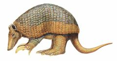
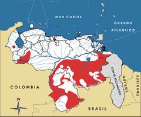

Priodontes maximus
| Cuspón | |
|---|---|
|  | |
| Riesgo de extinción | |
 En peligro (UICN) | |
| Clasificación científica | |
| Reino: | Animalia |
| Filo: | Chordata |
| Clase: | Mammalia |
| Orden: | Cingulata |
| Familia: | Dasypodidae |
| Género: | Priodontes |
| Especie: | Priodontes maximus |
| Nombre binomial | |
|
Priodontes maximus Kerr, 1792 | |
| Distribución | |
|
 Mapa de distribución de Priodontes maximus | |
Contenido
Información de Evaluación
- Categoría y Criterio Regional: En Peligro A2cd
- Fecha de Evaluación Regional: 2015
- Evaluadores: Jesús Morales-Campos y Ariany García-Rawlins
- Categoría y Criterio Global: Vulnerable A2cd
Justificación
Evaluaciones Previas
1999: En Peligro (EN)
2008: En Peligro (EN)
Información General
Nombres comunes
Cuspón, cuspa gigante, cuspa grande, cachicamo gigante, armadillo gigante, giant armadillo.
Notas taxonómicas
Sinónimos
Priodontes giganteus
Descripción
Es el cachicamo viviente más grande y corpulento. Mide de 75 a 100 cm de longitud, y puede llegar a pesar hasta 30 kg. Su cabeza es gruesa con el dorso cubierto de placas poligonales; tiene un rostro de forma cónica, desprovisto de pelos y es de color carne. Aunque su vientre es desnudo, el resto de su cuerpo está cubierto por un caparazón flexible formado por placas pequeñas, grises y con tonos amarillentos hacia los bordes inferiores. Porta garras muy grandes y robustas, y la central mide hasta 20,3 cm siguiendo la curvatura. Es una especie nocturna, solitaria y terrestre, cuya dieta está compuesta principalmente por hormigas y termitas coloniales, aunque puede consumir larvas de otros artrópodos, culebras y carroña en general (Mondolfi 1971a, Barreto et al. 1985, Eisenberg 1989, J. Ojasti obs. pers.). Por su tamaño, aspecto peculiar y mansedumbre, constituye un valioso atractivo para el turismo ecológico.
Distribución
Priodontes maximus es el único miembro de un género monotípico endémico de Suramérica y de amplia distribución. Se extiende al este de los Andes desde el norte de Colombia, Venezuela y las Guayanas, hasta el norte de Argentina, abarcando la cuenca del río Amazonas (Wetzel 1982, Eisenberg 1989, Emmons 1990). Está extinto a nivel regional en Uruguay (Anacleto et al. 2014). En Venezuela se encuentra a lo largo de bosques densos del piedemonte de las cordilleras de la Costa y los Andes. Se ha registrado en el occidente de Apure, Barinas, Portuguesa, Lara, Yaracuy, Zulia, nororiente de Guárico, y sur del río Orinoco en Bolívar y Amazonas (Handley Jr. 1976, J. Ojasti obs. pers.). Utiliza una gran variedad de hábitat que incluye desde sabanas hasta bosques húmedos siempreverdes (Eisenberg 1989).
- Sistema: Terrestre
- Bioregión:
- Intervalo altitudinal (m): 500
- Endémica: No
Situación
Es una especie de biología frágil, escasa por naturaleza, con baja capacidad reproductiva y de hábitos muy especializados. De ningún fragmento de su distribución se conocen estudios poblacionales. En Venezuela se distribuye de forma amplia pero se encuentra localmente restringida con densidades poblacionales muy bajas (Mondolfi 1971a, Mondolfi 1976, J. Ojasti obs. pers.). Es probable que habitara zonas de sabana donde en la actualidad ha sufrido extinciones locales debido a las altas tasas de explotación y destrucción de hábitat (Emmons 1990). Al norte del río Orinoco sus poblaciones están virtualmente extintas, sobre todo en la Cordillera de la Costa (Mondolfi 1976). A escala internacional, se considera Vulnerable de extinción (IUCN 2014). En Colombia se reporta En Peligro, y en Perú y Ecuador Vulnerable (Pulido 1991, Rodríguez-Mahecha et al. 2006, Tirira 2011).
- EOO (km2): Temporalmente sin información
- AOO (km2): Temporalmente sin información
- Tendencia Poblacional: Decreciendo
Amenazas
Al ser un animal tan grande, enfrenta una cacería indiscriminada con fines comerciales como fuente de alimento. Además, algunas poblaciones indígenas amazónicas utilizan sus pezuñas para fabricar ornamentos (Mondolfi 1976, Suárez, L. y García 1986). Al norte del río Orinoco la presión de cacería se une a la destrucción de su hábitat (Oliveira-Miranda et al. 2010c), factores cuya convergencia resulta mucho más nociva que el impacto que ocasionan de manera separada. Esto ha dado lugar a la fragmentación y aislamiento de sus poblaciones (Pdvsa 1992, Rodríguez, J. P. y Rojas-Suárez 2003).
Conservación
A escala internacional la especie está incluida en el Apéndice I de la Convención sobre el comercio internacional de especies amenazadas de fauna y flora silvestres (Cites 2014). En nuestro país se encuentra especialmente protegida desde 1983, mediante una resolución que prohíbe la cacería de cachicamos, la cual se ratifica en 1996 por un decreto que establece su veda indefinida y otro que la declara de manera oficial como Especie en Peligro de Extinción (Venezuela 1996a, Venezuela 1996b, J. Ojasti obs. pers.). Algunas de las subpoblaciones se localizan en parques nacionales como Río Viejo-San Camilo (estado Apure), Guatopo (quizás la última en la cordillera norte de Venezuela), Parima-Tapirapecó (estado Amazonas) y Canaima (estado Bolívar), aunque se desconoce la efectividad de estos parques como medida de conservación. Entre otras acciones para su protección, se han emprendido iniciativas de concientización y educación que lamentablemente no han tenido continuidad. Se recomienda realizar investigaciones básicas que definan su distribución, tamaño poblacional, presión de cacería y efectividad del sistema de áreas protegidas para garantizar la sobrevivencia viable de la especie. Debido a las peculiaridades de Priodontes maximus y a la naturaleza de su amenaza, es prioritario desarrollar campañas de concientización para divulgar los problemas que enfrenta, tomando en cuenta que no se tiene hasta el momento ningún indicio de recuperación de sus poblaciones locales (Rodríguez, J. P. y Rojas-Suárez 2003).
Autorías
Autores originales
Juhani Ojasti y Pablo Lacabana
Colaboradores
Ilustrador
Astolfo Mata
Referencias
- Anacleto, T. C. S., Miranda, F., Medri, I., Cuellar, E., Abba, A. M. y Superina, M. (2014). Priodontes maximus. The IUCN Red List of Threatened Species 2014. Disponible en www.iucnredlist.org/details/18144/0.
- Barreto, M., Barreto, P. y D'Alessandro, A. (1985). Colombian armadillos: stomach contents and infection with Trypanosoma cruzi. Journal of Mammalogy 66(1): 188-193.
- Cites. (2014). Apéndices I, II y III (válidos desde el 14 de septiembre de 2014). Convención sobre el Comercio Internacional de Especies Amenazadas de Fauna y Flora Silvestres (CITES). 47 pp.
- Eisenberg, J. F. (1989). Mammals of the Neotropics. The Northern Neotropics (Vol. 1). Panamá, Colombia, Venezuela, Guyana, Suriname, French Guiana. University of Chicago Press. Chicago y Londres. 449 pp.
- Emmons, L. H. (1990). Neotropical Rainforest Mammals, a field guide. University of Chicago Press. Chicago y Londres. 281 pp.
- Handley Jr., C. O. (1976). Mammals of the Smithsonian Venezuelan Project. Brigham Young University Science Bulletin, Biological Series 20(5): 1-89.
- IUCN (2014). The IUCN Red List of Threatened Species. Version 2014.3. Accesible en www.iucnredlist.org.
- Mondolfi, E. (1971a). El armadillo gigante o cuspa. Defensa de la Naturaleza 1(3): 24-33.
- Mondolfi, E. (1976). Fauna Silvestre de los Bosques Húmedos de Venezuela. Páginas: 113-181. En: Hamilton, L. S., Steyermark, J., Veillon, J. P. y Mondolfi, E. (Eds.). Conservación de los Bosques Húmedos de Venezuela. Sierra Club, Consejo de Bienestar Rural. Caracas.
- Ojasti, J. y Lacabana, P. (2015). Cuspón, Priodontes maximus. En: J.P. Rodríguez, A. García-Rawlins y F. Rojas-Suárez (eds.) Libro Rojo de la Fauna Venezolana. Cuarta edición. Provita y Fundación Empresas Polar, Caracas, Venezuela. Recuperado de: animalesamenazados.provita.org.ve/content/cuspon Jue, 01/03/2018 - 12:29
- Oliveira-Miranda, M. A., Huber, O., Rodríguez, J. P., Rojas-Suárez, F., De Oliveira-Miranda, R., Zambrano-Martínez, S. y Giraldo Hernández, D. (2010c). Riesgo de eliminación de los ecosistemas terrestres de Venezuela. Páginas: 109-235. En: Rodríguez, J. P., Rojas-Suárez, F. y Giraldo Hernández, D. (Eds.). Libro Rojo de los Ecosistemas Terrestres de Venezuela. Provita, Shell Venezuela y Lenovo (Venezuela). Caracas, Venezuela.
- Pdvsa (1992). Imagen de Venezuela. Una visión espacial. Instituto de Ingeniería. Caracas.
- Pulido, V. (1991). El Libro Rojo de La Fauna Silvestre del Perú. Instituto Nacional de Investigación Agraria y Agroindustrial. Lima, Perú. 219 pp.
- Rodríguez-Mahecha, J. V., Alberico, M., Trujillo, F. y Jorgenson, J. (Eds.) (2006). Libro Rojo de los Mamíferos de Colombia. Serie Libros Rojos de Especies Amenazadas de Colombia. Conservación Internacional, Ministerio del Ambiente, Vivienda y Desarrollo Territorial. Bogotá, Colombia. 433 pp.
- Rodríguez, J. P. y Rojas-Suárez, F. (1999). Libro Rojo de la Fauna Venezolana, segunda edición. PROVITA, Fundación Polar. Caracas. 444 pp.
- Rodríguez, J. P. y Rojas-Suárez, F. (2003). Libro Rojo de la Fauna Venezolana (2a ed. reim.). Provita, Fundación Polar. Caracas. 472 pp.
- Rodríguez, J. P. y Rojas-Suárez, F. (Eds.) (2008). Libro Rojo de la Fauna Venezolana, tercera edición. Provita y Shell Venezuela, S. A. Caracas, Venezuela. 364 pp.
- Suárez, L. y García, M. (1986). Extinción de animales en el Ecuador. Fundación Natura. Quito. 153 pp.
- Tirira, D. G. (2011). Libro Rojo de los mamíferos del Ecuador. 2a. edición. Fundación Mamíferos y Conservación, Pontificia Universidad Católica del Ecuador y Ministerio del Ambiente del Ecuador. Publicación especial sobre los mamíferos del Ecuador 8. Quito.
- Venezuela. (1996a). Decreto 1485: Animales Vedados para la Caza. Gaceta Oficial No. 36.059 - 7 de octubre de 1996. Caracas.
- Venezuela. (1996b). Decreto 1486: Especies en Peligro de Extinción. Gaceta Oficial No. 36.062- 10 de octubre de 1996. Caracas.
- Wetzel, R. M. (1982). Systematics, distribution, ecology, and conservation of South American edentates. Páginas: 345-375. En: Mares, M. A. y Genoways, H. H. (Eds.). Mammalian Biology in South America. Special Publication Series of the Pymatuning Laboratory of Ecology, University of Pittsburgh. Pittsburgh.